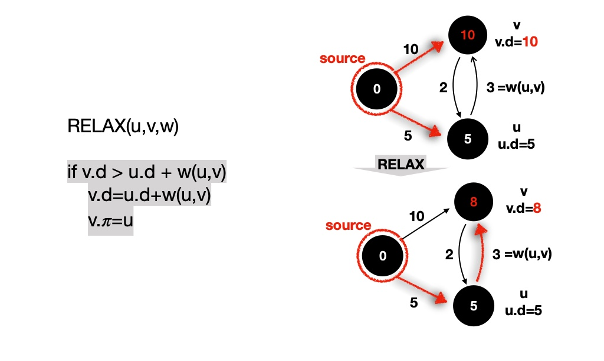
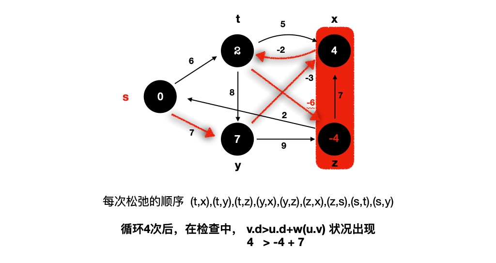

单源最短路径
阅读《算法导论》里的一些总结，这里抛开了繁杂的理论知识，希望能用通俗易懂的方法来和大家一起讨论算法。
从 中国的 最北方到拉萨 ，我们怎样才是走最短的路程？
路在何方？

密密麻麻的高速网络（基建狂魔），怎样选择一条路线是最短的？ 是最快的？ 是最省钱的？
如果交通方式加上了飞机、轮船、高铁，又该如何选择呢？
这些问题可以用「单源最短路径」算法来解决，看看算法的魅力
有向图

一个简单的抽象，我们将路程选择中的五个地名，换成五个节点，那么不同几点间的权重可以是公里数、路上花费的天数、钱数等等。
这样当我们找到一个节点到另一个节点中最短的路径，我们就知道怎么走是最短的、最快的、花钱最少的。
基础的一些概念
这里说明一些基础的算法知识，不用特别复杂，我会用通俗的说明下。
总结来说的意思，就是 G= （5，10） ，表示 这个有向图有5个节点，10条边，当以这5个节点中的一个为起始节点时，到终点节点数字和最小的就是路径就是单源最短路径路径。
例如：
红色箭头的就是从起始节点到终止节点的路径，每个节点中的红色数字就是路径长度。
呐，这里我们必须了解的又一个概念，叫做 「松弛(relaxation)」
松弛
将从节点s到节点u之间的最短路径距离加上节点u与v之间的边权重，与节点s到v的最短路径估计比较，如果如果前者较小，则更新节点s到v的最短路径估计。
三角不等式
对于任何边 $(u,v)∈E$ ,有 $w(s,v)<=w(s,u)+w(u,v)$
文字让人迷惑，上 demo ：

可以这样理解，我们从 A->B 需要10天时间，但是我们从 A->C = 5天，从 C->B = 3天，这样我们就可以认为 从 A->B = 8天。让自己 Relax 一下喽~
Bellman-Ford
ok，理解了一些基础概念，我们看一看算法「Bellman-Ford」是怎么实现的~
1 | BELLMAN_FORD(G,w,s) |
这里为什么要检测，权重为负的环呢？ 因为最短呀，如果有为负的环， 负无穷 $-\infty$ 了解一下~
带入上面的松弛，我们最终得到的是这样的路径：
如果出现了权重为负的环呢？
注意看最后的 t -> z -> x 环，一圈的权和为-1 ，意味着我们只要在这个环里无限循环，是不可能找到最小的解的

总结一下：
- 解决 一般情况下 的单源最短路径问题
- 边的权重可以为 负值
- 可以 存在环
- 环内 权重和为负值 时，无解
- 每条边进行 |V|-1 次松弛
- 需要 检测异常环 存在
- 时间复杂度 O(VE)
有向无环图
这里在说明下 有向无环图 中的简单解决方案。
1 | DAG-SHORTEST-PATHS(G,w,s) |
拓扑排排序
这里进行一系列的松弛操作（多图警告）：
红色的线就表示最短路径，可以注意每次 Relax 操作，不同节点上数字的变化，和线条颜色的变化。
总结一下：
- 解决有向无环图的单源最短路径问题
- 边的权重可以为负值
- 不可以存在环
- 对图进行拓扑排序
- 对从处理节点发出的边进行松弛操作
- 时间复杂度O(V+E)
Dijkstra
借助一个最小优先队列，做贪心选择，实现逻辑。
1 | DIJKSTRA(G,w,s) |
每一次 u=EXTRACT-MIN(Q) 出来的节点，用灰色节点表示，加入 S 的则用黑色节点表示， 在队列中的则用白色节点表示。
这里队列中 pop 出节点 s ，relax 后，队列中的 t、y 节点变为10 、 5 。
则队列中存在 {t(10),y(5),x($\infty$),z($\infty$)} ,pop 出的节点为 y。
同上，节点 y 进入 S ，更改队列中节点的数值。
relex 之后，队列中的节点变为{t(8),x(14),z(7)},pop 下一次 pop 出节点 z。
同上，节点 z 进入 S ，更改队列中节点的数值。
relex 之后，队列中的节点变为{t(8),x(13)},pop 下一次 pop 出节点 z。
最终的筛选出来的，s -> z 的路径 是 s-> y -> z，路径长度为 7
总结一下：
- 解决一般情况的单源最短路径问题
- 边的权重不可以为负值
- 可以存在环
- 对图节点插入最小优先队列（排序依据：V-S集合的最短路径估计）
- 贪心算法
- 对从pop出的最小节点发出的边进行松弛操作
- 时间复杂度依赖最小优先队列的实现
- hash ： $O(V²+E) = O(V²)$
- 二叉堆：稀疏图情况, $O((V+E)lgV)$ ,都可从源点到达 $O(ElgV)$
- 斐波那契堆： $O(VlgV+E)$
后续
后续会整理一些真正的代码实现出来吧 等更新吧
# 防止 markdownlint 报错